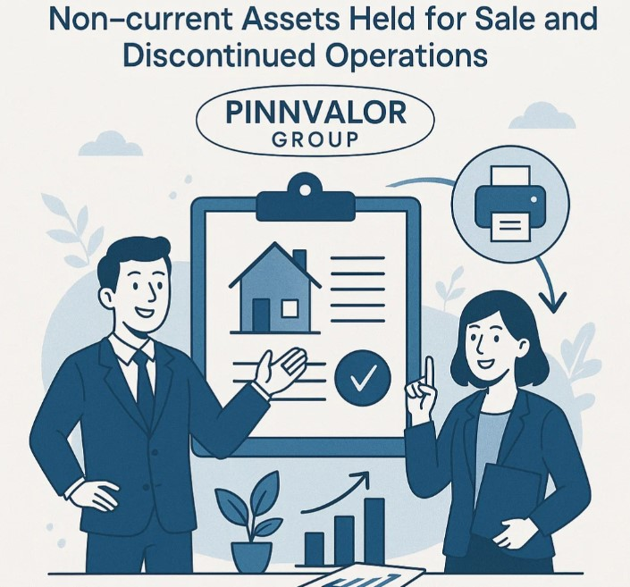

IFRS 5 – Non-current Assets Held for Sale and Discontinued Operations
Bringing Clarity to Business Restructuring and Asset Disposals
Businesses are constantly evolving—selling underperforming divisions, focusing on core strengths, or realigning operations for long-term growth. When such changes involve disposing of significant assets or discontinuing a line of business, financial statements must clearly reflect these shifts. IFRS 5 provides guidance to ensure consistent classification, measurement, and presentation of these events.
How does IFRS 5 help investors see beyond the numbers to your company’s real strategy?
Clarity drives confidence. IFRS 5 ensures your stakeholders know exactly which parts of the business will fuel future growth — and which won’t.
1. Purpose of IFRS 5
The primary goal of IFRS 5 is to:
- Identify when a non-current asset or group of assets should be classified as held for sale.
- Specify how to measure those assets once classified.
- Define how discontinued operations should be reported in the financial statements.
In short, IFRS 5 separates “business as usual” from “business in transition.”
2. Scope
IFRS 5 applies to:
- Non-current assets (tangible, intangible, and certain financial assets) classified as held for sale.
- Disposal groups — sets of assets and directly associated liabilities to be disposed of together.
- Discontinued operations — components that represent a major line of business or geographical area, or are acquired exclusively for resale.
3. Classification Criteria — When is an Asset ‘Held for Sale’?
A non-current asset (or disposal group) is classified as held for sale when all of the following are met:
- Available for immediate sale in its present condition, subject only to usual terms.
- Sale is highly probable, meaning:
- Management has committed to a plan to sell.
- An active program to locate a buyer is underway.
- The asset is marketed at a price reasonable in relation to its fair value.
- Sale is expected to be completed within 12 months.
- Actions required to complete the plan indicate it is unlikely to be withdrawn or significantly changed.
4. Measurement Rules
Once classified as held for sale:
- The asset (or disposal group) is measured at the lower of carrying amount and fair value less costs to sell.
- Depreciation or amortisation ceases from the date of classification as held for sale.
- If the carrying amount exceeds fair value less costs to sell, an impairment loss is recognised in profit or loss.
5. Presentation Requirements
Key presentation rules:
- On the statement of financial position, assets held for sale are presented separately from other assets.
- Liabilities of disposal groups are presented separately from other liabilities.
- On the statement of profit or loss, the results of discontinued operations (post-tax) are shown as a single amount, separate from continuing operations.
- Comparative figures must be re-presented to show discontinued operations separately for all periods presented.
6. Discontinued Operations — Key Definition
A discontinued operation is a component of an entity that has been disposed of, or is classified as held for sale, and:
- Represents a major line of business or geographical area of operations; or
- Is part of a single coordinated plan to dispose of such a line or area; or
- Is a subsidiary acquired exclusively with a view to resale.
This ensures users of financial statements can evaluate ongoing performance separately from activities that will not contribute to future earnings.
7. Benefits of IFRS 5 Compliance
- Transparency: Stakeholders can clearly distinguish between continuing and exiting parts of the business.
- Better decision-making: Investors can assess ongoing earning potential without distortion from discontinued activities.
- Comparability: Standardised treatment improves comparability across entities and periods.
8. Common Pitfalls
Typical mistakes to avoid:
- Prematurely classifying assets as held for sale before meeting the highly probable criteria.
- Continuing to depreciate or amortise assets after they are classified as held for sale.
- Failing to re-present prior period comparatives for discontinued operations.
- Incorrect measurement — for example, ignoring costs to sell when determining fair value less costs to sell.
9. Practical Example (Concise)
Company A decides to sell a non-core manufacturing division. Management approves a sale plan, starts marketing the division at a reasonable price, and expects completion in 9 months. From the date of classification:
- The division’s assets are presented as held for sale and measured at the lower of carrying amount and fair value less costs to sell.
- No depreciation is charged on the division's assets.
- Results of the division are presented as discontinued operations in the income statement.
10. Final Takeaway
IFRS 5 is not just an accounting rule — it is a communication tool. By separating assets and operations that are exiting the business from those that will drive future growth, IFRS 5 provides clarity and helps stakeholders make informed decisions. For preparers of financial statements, careful adherence to the classification, measurement, and presentation rules is essential to avoid misleading users and ensure comparability.
Would you like an SEO-optimised version (with meta tags, headings adjusted for SEO, and short lead paragraph) or a translated Gujarati version for teaching purposes?